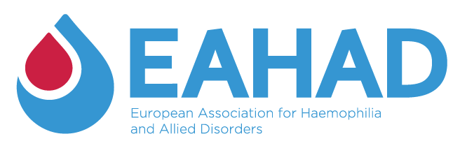
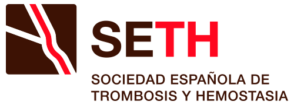

State of the Art in Hemophilia: Self Assessment Program
Hacia un Reequilibrio
Hemostático
Innovación, Subcutaneidad y Humanismo. El programa definitivo para liderar la transición clínica hacia los agentes reequilibrantes (Anti-TFPI).
"La medicina de precisión no solo inhibe vías moleculares; libera el proyecto vital del paciente."
Un Cambio de Paradigma:
De la Sustitución al Reequilibrio.
La Justificación Clínica de la inhibición del TFPI.
La vanguardia hematológica exige actualizar competencias hoy.
Metodología UX y Certificación Oficial.
Un entorno virtual de aprendizaje diseñado para garantizar la adquisición de competencias, exigiendo una navegación secuencial requerida por la Comisión Nacional.
-
school
Evaluación Formativa Continua
Cuestionarios interactivos (Self-Assessments) al final de cada módulo con feedback razonado al instante.
-
auto_stories
Contenidos de Clase Mundial
Malla curricular basada estrictamente en "Haemophilia", el journal oficial de la WFH y EAHAD.
-
bolt
Flexibilidad Asíncrona
Estudio adaptativo 100% online con soporte visual avanzado para agendas médicas saturadas.

Referente EuropeoObjetivos del Programa.
Capacitar al especialista a través de tres dimensiones fundamentales para la nueva era del tratamiento hemostático.
Dimensión Genómica
Comprender la influencia de la arquitectura genética mediante herramientas NGS para predecir el riesgo de inhibidores y la respuesta a las nuevas terapias sistémicas.
Dimensión Terapéutica
Dominar el mecanismo de acción de los anti-TFPI, interpretar ensayos de generation de trombina (TGA) y aplicar algoritmos de transición clínica (Switching) seguros.
Dimensión Humanista
Incorporar modelos de Toma de Decisiones Compartida (SDM) y evaluación de PROs para minimizar el *Treatment Burden* y potenciar la autonomía del paciente.
Capacitación de Excelencia en Hematología.
Impacto transversal por perfiles médicos.
Médicos MIR
Construyendo las bases de la medicina genómica y la generación de trombina desde su residencia.
Especialistas
Otorgando algoritmos clínicos seguros para la transición (switch) a terapias subcutáneas.
Jefaturas Médicas
Facilitando la actualización de protocolos de servicio avalados por la última evidencia (BASIS y explorer).
Comités de Farmacia
Comprendiendo el impacto del "Treatment Burden" y la autonomía clínica en la farmacoeconomía hospitalaria.
El Currículum Científico.
3 Módulos de Excelencia.
Estructurado bajo los máximos estándares UX para CFC: Syllabus maquetado, Hot Issues, Casos Clínicos y Evaluaciones formativas en cada módulo.
Estableciendo la necesidad de la caracterización molecular para la medicina personalizada y predecir el comportamiento clínico ante las nuevas terapias sistémicas.
Estructura del Módulo
- play_arrow Executive Brief: De la mutación al fenotipo: ¿Por qué la genética dicta el futuro del tratamiento?
- play_arrow Scientific Core: Correlación genotipo-fenotipo y secuenciación de nueva generación (NGS) con "puntos clave".
- play_arrow Critical Debate: ¿Es ético y coste-efectivo el screening genético universal en todos los grados de severidad?
- play_arrow Further readings: Resúmenes y enlaces directos a PubMed y a registros genéticos de la WFH de libre acceso.
- play_arrow Practice insights: Cómo interpretar un informe genético complejo en la consulta diaria para predecir inhibidores.
- play_arrow Clinical Cases: Resolución interactiva: paciente pediátrico con mutación de alto riesgo. Manejo del consejo genético y la familia.
- play_arrow Self-Assessment: Cuestionario interactivo de 10 preguntas con feedback razonado para asentar conceptos teóricos.
- play_arrow Multimedia: Vídeos explicativos y animación 3D sobre la cascada de coagulación a nivel molecular.
Análisis exhaustivo de la evidencia clínica, eficacia y seguridad clínica de los anticuerpos monoclonales anti-TFPI (marstacimab y concizumab).
Estructura del Módulo
- play_arrow Executive Brief: Inhibición de la vía del factor tisular: Una nueva vía hacia la hemostasia sin reemplazo de factor.
- play_arrow Scientific Core: Resultados de los ensayos clínicos pivotales fase 3 (BASIS y explorer), endpoints y seguridad.
- play_arrow Critical Debate: Monitorización mediante ensayos de generación de trombina y manejo proactivo del riesgo pro-trombótico.
- play_arrow Further readings: Guías de consenso más recientes de la WFH/EAHAD sobre el manejo de terapias de no-reemplazo.
- play_arrow Practice insights: Algoritmo clínico de decisión: ¿Qué perfil de paciente es ideal para iniciar profilaxis con Anti-TFPI?
- play_arrow Clinical Cases: Abordaje práctico de la transición terapéutica (switch) desde intravenoso hacia un monoclonal subcutáneo.
- play_arrow Self-Assessment: Cuestionario interactivo sobre dosificación, pautas de rescate y seguridad de los agentes reequilibrantes.
- play_arrow Multimedia: Curación de vídeos de simposios y MoA (Mecanismo de Acción) interactivo generado por IA.
Integrando la ventaja técnica de la vía subcutánea con el modelo de Medicina Hipocrática, enfocándonos en la autonomía clínica y la reducción de la carga de la enfermedad crónica.
Estructura del Módulo
- play_arrow Executive Brief: De la Disease a la Illness: Cómo la vía subcutánea redibuja la biografía y el proyecto vital del paciente.
- play_arrow Scientific Core: Resultados reportados por pacientes (PROs), métricas de adherencia y calidad de vida (QoL) en terapias SC.
- play_arrow Critical Debate: El impacto de la autogestión: ¿Menos visitas hospitalarias significa una pérdida de la alianza terapéutica?
- play_arrow Further readings: Bibliografía fundamental sobre Medicina Narrativa, Treatment Burden y Toma de Decisiones Compartida (SDM).
- play_arrow Practice insights: Guía rápida para empoderar al paciente para viajar, trabajar o practicar deporte sin la "esclavitud de la vena".
- play_arrow Clinical Cases: Adulto joven con fobia a las agujas y mal acceso venoso. Resolución emocional e impacto sociolaboral.
- play_arrow Self-Assessment: Cuestionario evaluando la aplicación de escalas de calidad de vida y herramientas de comunicación empática.
- play_arrow Multimedia: Material de alto impacto emocional: testimonios y documentales respaldados por la WFH.
Dirección Académica Institucional.
KOLs de Referencia en la Hematología Española.
Dr. Víctor Jiménez Yuste
Jefe de Servicio de Hematología. Hospital Universitario La Paz (Madrid).
Dra. María Teresa Álvarez Román
Jefa de Sección de Hemostasia. Hospital Universitario La Paz (Madrid).
Dr. Ramiro Núñez Vázquez
Referente en Hemofilia. Hospital Universitario Virgen del Rocío (Sevilla).

El Paciente
en el Centro.
Un enfoque holístico del paciente.
Nuestra propuesta educativa culmina expandiendo el horizonte puramente farmacológico. Dotamos al clínico de herramientas para que la subcutaneidad sea un verdadero catalizador de la biografía del paciente. Únete como mecenas institucional para liderar esta vanguardia educativa.